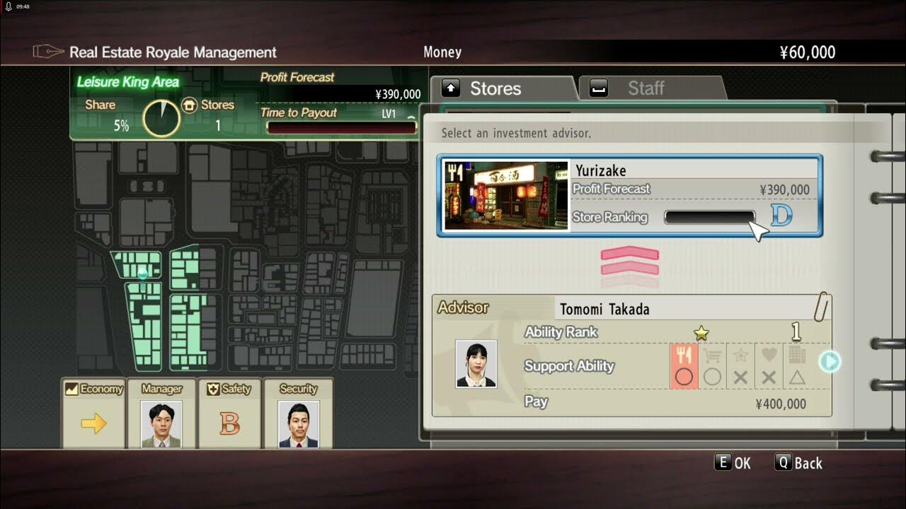

Side Content
Whether you play either as Majima or Kiryu, both characters have lots of content besides the main story. Both characters are pretty much shenanigans magnets, to say the least. No matter where they go, they either get into a street fight, or they drop everything to help some of the most random or stupid (not exaggerating) people in their respective towns. However, whether its bowling, darts, pool, or even karaoke, Yakuza 0 has some pretty big minigames and management. In this example, Kiryu temporarily has a real estate business minigame where you collect money, invest to collect more money, or spend on getting more buildings to invest, with some "friendly" rivalry along the way.